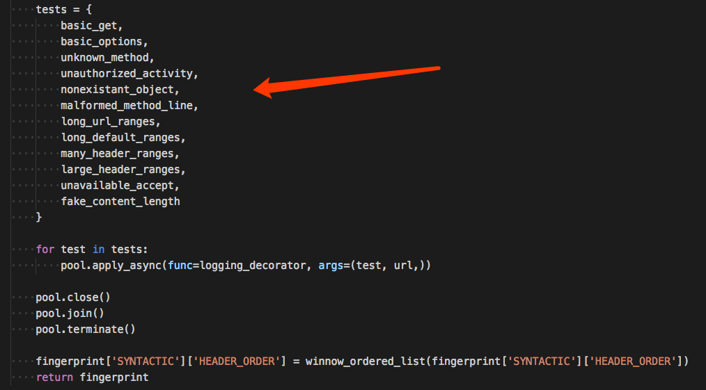
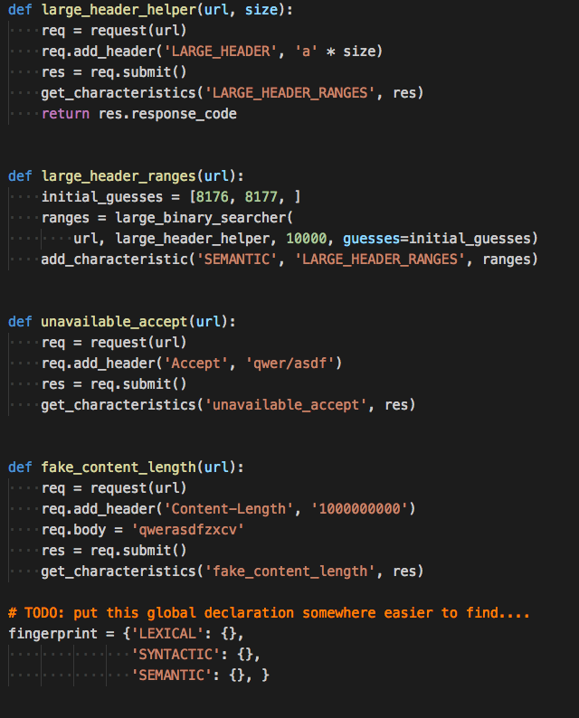
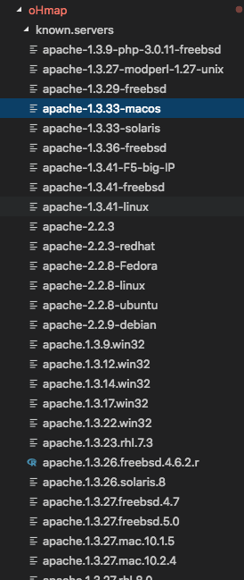
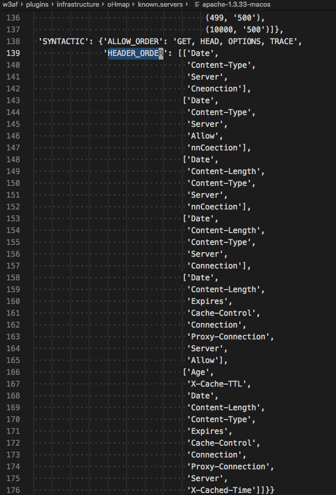

最近又想完成我未完成的漏洞扫描器大计，w9scan积累了很多扫描器经验，有觉得比较好的，也有觉得不好的地方，例如python的单例模式让我批量扫描出现了很多数据冲突的情况，插件化的扫描器如何获取上一个插件的结果（插件之间如何沟通），插件化扫描器如何确认处理完毕…还有很多待我后面整理整理。其实最大的问题是漏洞规则payload还是太少了，所以看看w3af的规则库。
w3af是一个比较知名的扫描器，而且是开源的，但是以我的经验来说没，效果似乎不怎么好。但是没关系，它依然非常优秀，值得我们学习。
w3af规则还是挺容易找到的，基本一个文件就是一种类型的规则，于是整理一下。
信息收集
信息收集相关的路径在w3af/plugins/infrastructure
图标指纹识别
就是favicon的md5，规则库挺多的
e08333841cbe40d15b18f49045f26614:21publish Blog
ecaa88f7fa0bf610a5a26cf545dcd3aa:3-byte invalid favicon: domain sellers
a7947b1675701f2247921cf4c2b99a78:Alexander Palmo Simple PHP Blog
2e9545474ee33884b5fb8a9a0b8806dd:Ampache
99306a52c76e19e3c298a46616c5899c:aMule (2.2.2)
2d4cca83cf14d1adae178ad013bdf65b:Ant docs manual (1.7.1)
032ecc47c22a91e7f3f1d28a45d7f7bc:Ant docs (1.7.1) / libjakarta-poi-java (3.0.2)
2ab2aae806e8393b70970b2eaace82e0:Apache CouchDB (0.8.0-1.3.0)
73778a17b0d22ffbb7d6c445a7947b92:Apache on Mac OS X
71e30c507ca3fa005e2d1322a5aa8fb2:Apache on Redhat
d99217782f41e71bcaa8e663e6302473:Apache on Red Hat/Fedora
4644f2d45601037b8423d45e13194c93:Apache Tomcat (5.5.26), Alfresco Community
d80e364c0d3138c7ecd75bf9896f2cad:Apache Tomcat (6.0.18), Alfresco Enterprise Content Management System
31aa07fe236ee504c890a61d1f7f0a97:Apache2 (2.2.9) docs-manual
a8fe5b8ae2c445a33ac41b33ccc9a120:Arris Touchstone Device
dc0816f371699823e1e03e0078622d75:Aruba Network Devices (HTTP(S) login page)
43ba066789e749f9ef591dc086f3cd14:Atlassian Bamboo
a83dfece1c0e9e3469588f418e1e4942:Atlassian Bamboo
12888a39a499eb041ca42bf456aca285:Atlassian Confluence or Crowd
3341c6d3c67ccdaeb7289180c741a965:Atlassian Confluence or Crowd
1275afc920a53a9679d2d0e8a5c74054:Atlassian Crowd
01febf7c2bd75cd15dae3aa093d80552:Atlassian Crucible or Fisheye
6c1452e18a09070c0b3ed85ce7cb3917:Atlassian Jira
04d89d5b7a290334f5ce37c7e8b6a349:Atlassian Jira Bug Tracker
d6923071afcee9cebcebc785da40b226:autopsy (2.08)
7513f4cf4802f546518f26ab5cfa1cad:axyl (2.6.0)
de68f0ad7b37001b8241bce3887593c7:b2evolution (2.4.2)
de2b6edbf7930f5dd0ffe0528b2bbcf4:Barracuda Spam/Virus firewall appliance
f51425ace97f807fe5840c4382580fd5:Beehive Forum (1.x)
1a9a1ec2b8817a2f951c9f1793c9bc54:Bitweaver
140e3eb3e173bfb8d15778a578a213aa:bmpx (0.40.14)
ea84a69cb146a947fac2ac7af3946297:boost (1.34.1)
4f12cccd3c42a4a478f067337fe92794:cacti (0.8.7b)
c0533ae5d0ed638ba3fb3485d8250a28:CakePHP (1.1.x)
66b3119d379aee26ba668fef49188dd3:CakePHP (1.2.x-1.3x)
09f5ea65a2d31da8976b9b9fd2bf853c:caudium (1.4.12)
f276b19aabcb4ae8cda4d22625c6735f:cgiirc (0.5.9)
a18421fbf34123c03fb8b3082e9d33c8:chora2 (2.0.2)
23426658f03969934b758b7eb9e8f602:chronicle (2.9) theme-steve
75069c2c6701b2be250c05ec494b1b31:chronicle (2.9) theme-blog.mail-scanning.com
27c3b07523efd6c318a201cac58008ba:cimg (1.2.0.1)
f097f0adf2b9e95a972d21e5e5ab746d:Citrix Access Server
a1c686eb6e771878cf6040574a175933:CivicPlus
ceb25c12c147093dc93ac8b2c18bebff:COMpact 5020 VoIP
428b23df874b41d904bbae29057bdba5:Comsenz Technology Ltd ECShop
8757fcbdbd83b0808955f6735078a287:Comsenz Technology Ltd Discuz!
9fac8b45400f794e0799d0d5458c092b:Comsenz Technology Ltd Discuz!
4e370f295b96eef85449c357aad90328:Comsenz Technology Ltd SupeSite
ddd76f1cfe31499ce3db6702991cbc45:cream (0.41)
74120b5bbc7be340887466ff6cfe66c6:cups (1.3.9) - doc
9c003f40e63df95a2b844c6b61448310:DD-WRT Embedded Web Server
abeea75cf3c1bac42bbd0e96803c72b9:doc-iana-20080601
3ef81fad2a3deaeb19f02c9cf67ed8eb:dokuwiki (0.0.20080505)
c86974467c2ac7b6902189944f812b9a:Domain Technology Control (0.17.x-0.24.x)
bba9f1c29f100d265865626541b20a50:Domain Technology Control (0.25.x-0.36.x)
5b0e3b33aa166c88cee57f83de1d4e55:DotNetNuke (http://www.dotnetnuke.com)
4cbb2cfc30a089b29cd06179f9cc82ff:Dragonfly
f0ee98b4394dfdab17c16245dd799204:Drupal CMS
a4819787db1dabe1a6b669d5d6df3bfd:Drupal CMS (2.x-4.x)
e6a9dc66179d8c9f34288b16a02f987e:Drupal CMS (5.x-6.x)
b6341dfc213100c61db4fb8775878cec:Drupal CMS (7.x)
9a9ee243bc8d08dac4448a5177882ea9:Dvbbs Forum
81ed5fa6453cf406d1d82233ba355b9a:E-zekiel
171429057ae2d6ad68e2cd6dcfd4adc1:ebug-http (0.31)
f6e9339e652b8655d4e26f3e947cf212:eGroupWare (1.0.0.009, 1.4.004-2) (/phpgwapi/templates/idots/images/favicon.ico)
fa2b274fab800af436ee688e97da4ac4:Etherpad
51b916bdaf994ce73d3e5e6dfe2a46ee:Feng Office (2.3)
eb3e307f44581916d9f1197df2fc9de3:flac (1.2.1)
a6b55b93bc01a6df076483b69039ba9c:Fog Creek Fogbugz (6.1.44)
093551287f13e0ee3805fee23c6f0e12:Freevo Media Centre (1.7.7-1.9.0)
45210ace96ce9c893f8c27c5decab10d:Fritz WLAN Repeater
56753c5386a70edba6190d49252f00bb:gallery (1.5.8)
54b299f2f1c8b56c8c495f2ded6e3e0b:garlic-doc (1.6)
857281e82ea34abbb79b9b9c752e33d2:gforge (4.6.99+svn6496) - webcalendar
27a097ec0dbffb7db436384635d50415:gforge (4.6.99+svn6496) - images
0e14c2f52b93613b5d1527802523b23f:gforge (4.6.99+svn6496)
85138f44d577b03dfc738d3f27e04992:Gitweb
c9339a2ecde0980f40ba22c2d237b94b:glpi (0.70.2)
921042508f011ae477d5d91b2a90d03f:gonzui (1.2+cvs20070129)
09b565a51e14b721a323f0ba44b2982a:Google web server
ecab73f909ddd28e482ababe810447c8:gosa (2.5.16.1)
c16b0a5c9eb3bfd831349739d89704ec:Gramps (3.x-4.x)
63d5627fc659adfdd5b902ecafe9100f:gsoap (2.7.9l)
462794b1165c44409861fcad7e185631:hercules (3.05)
39308a30527336e59d1d166d48c7742c:Hewlett-Packard HPLIP (2.8.7) - doc
7563f8c3ebd4fd4925f61df7d5ed8129:Holger Zimmerman Pi3Web HTTP Server
7cc1a052c86cc3d487957f7092a6d8c3:Horde (3.2.1) - graphics/tango
835306119474fefb6b38ae314a37943a:Horde Agora - Forum
b64a1155b80e0b06272f8b842b83fa57:Horde Ansel - Photo Manager
a18421fbf34123c03fb8b3082e9d33c8:Horde Chora - Code Repositories Viewer
0e6a6ed665a9669b368d9a90b87976a9:Horde Gollem - File Manager
db1e3fe4a9ba1be201e913f9a401d794:Horde Gollem - File Manager (1.0.3)
919e132a62ea07fce13881470ba70293:Horde Groupware Webmail (1.0.1) - Ingo Theme, 1.1.5
a5b126cdeaa3081f77a22b3e43730942:Horde Groupware Webmail (1.0.1) - Kronolith Theme, 2.1.8
f5f2df7eec0d1c3c10b58960f3f8fb26:Horde Groupware Webmail (1.0.1) - Mnemo Theme, 2.1.2
81df3601d6dc13cbc6bd8212ef50dd29:Horde Groupware Webmail (1.0.1) - Nag Theme, 2.1.4
ff260e80f5f9ca4b779fbd34087f13cf:Horde Groupware Webmail (1.0.1) - Turba Theme, 2.1.7
f567fd4927f9693a7a2d6cacf21b51b6:Horde IMP (4.1.4 - 4.1.6, also used in Horde Groupware Webmail 1.0.1)
3995c585b76bd5aa67cb6385431d378a:Horde SAM - Spam Assassin Module (0.1+cvs20080316) - silver
ee3d6a9227e27a5bc72db3184dab8303:Horde SAM - Spam Assassin Module (0.1+cvs20080316) - graphics
5e99522b02f6ecadbb3665202357d775:hplip (2.8.7) - installer
43d4aa56dc796067b442c95976a864fd:hunchentoot (0.15.7)
be6fb62815509bd707e69ee8dad874a1:i.LON server by Echelon
e4a509e78afca846cd0e6c0672797de5:i3micro VRG
32bf63ac2d3cfe82425ce8836c9ce87c:ikiwiki (2.56ubuntu1)
e2cac3fad9fa3388f639546f3ba09bc0:Invision Power Services IP.Board
4d7fe200d85000aea4d193a10e550d04:Intland Software codeBeamer
6acfee4c670580ebf06edae40631b946:Iomega StorCenter
1f9c39ef3f740eebb046c900edac4ba5:Iomega StorCenter ix2-200
37a99d2ddea8b49f701db457b9a8ffed:Iomega StorCenter ix4-200d
e7dce6ac6d8713a0b98407254ca33f80:Iomega StorCenter ix4-300d
f08d232927ab8f2c661616b896928233:Iomega StorCenter px2-300d
9d203fbb74eabf67f48b965ba5acc9a6:Iomega StorCenter px4-300d
fbd140da4eff02b90c9ebcbdb3736322:Iomega StorCenter px4-300r
fd3f689b804ddb7bfab53fdf32bf7c04:Iomega StorCenter px6-300d
8dfab2d881ce47dc41459c6c0c652bcf:Iomega StorCenter px12-350r
66dcdd811a7d8b1c7cd4e15cef9d4406:Iomega StorCenter px12-400r
799f70b71314a7508326d1d2f68f7519:JBoss Server
192decdad41179599a776494efc3e720:JBoss Installation
ed7d5c39c69262f4ba95418d4f909b10:jetty (5.1.14)
05bc6d56d8df6d668cf7e9e11319f4e6:Jive Forums
63b982eddd64d44233baa25066db6bc1:Joomla!
8894791e84f5cafebd47311d14a3703c:Joomla 1.7
6900fab05a50a99d284405f46e5bc7f6:k3d (0.6.7.0)
ff3b533b061cee7cfbca693cc362c34a:Kayako SupportSuite
24d1e355c00e79dc13b84d5455534fe7:kdelibs (3.5.10-4.1.4)
8ab2f1a55bcb0cac227828afd5927d39:kdenetwork (4.1.4)
54667bea91124121e98da49e55244935:kolab-webadmin (2.1.0-20070510)
d00d85c8fb3a11170c1280c454398d51:ktorrent (3.1.2)
a7fe149a9f2582f38576d14d9b1f0f55:LaCie Dashboard
240c36cd118aa1ff59986066f21015d4:LANCOM Systems
fa21ab1b1e1b4c9516afbd63e91275a9:lastfmproxy (1.3b)
663ee93a41000b8959d6145f0603f599:LDAP Account Manager (2.2-4.x)
669bc10baf11b43391294aac3e1b8c52:libitpp (4.0.4)
20e208bb83f3eeed7c1aa8a6d9d3229d:libswarmcache-java (1.0RC2+cvs20071027)
f89abd3f358cb964d6b753a5a9da49cf:LimeSurvey
7dbe9acc2ab6e64d59fa67637b1239df:Lotus-Domino
639b61409215d770a99667b446c80ea1:Lotus Domino Server
b8fe2ec1fcc0477c0d0f00084d824071:lucene (2.3.2)
80656aabfafe0f3559f71bb0524c4bb3:Macromedia Breeze
88733ee53676a47fc354a61c32516e82:Magento (1.x)
5f8b52715c08dfc7826dad181c71dec8:mahara (1.0.4)
eb6d4ce00ec36af7d439ebd4e5a395d7:Mailman
ebe293e1746858d2548bca99c43e4969:Mantis Bug Tracker (1.1.x-1.2.8 /images/favicon.ico)
701bb703b31f99da18251ca2e557edf0:Mantis Bug Tracker (1.2.9-1.2.15 /images/favicon.ico)
0a99a23f6b1f1bddb94d2a2212598628:Maraschino - Frontend for XBMC HTPC
0d42576d625920bcd121261fc5a6230b:mathomatic (14.0.6)
f972c37bf444fb1925a2c97812e2c1eb:mediatomb (0.11.0)
b7f98dd27febe36b7275f22ad73c5e84:MoinMoin
e551b7017a9bd490fc5b76e833d689bf:MoinMoin (1.7.1)
09d310e97902eefd0065f01c09c830fb:Moodle
933a83c6e9e47bd1e38424f3789d121d:Moodle (1.8.2, 1.9.x, multiple default themes)
b6652d5d71f6f04a88a8443a8821510f:Moodle (1.8.2, 1.9.x, Cornflower Theme, /theme/cornflower/favicon.ico)
06b60d90ccfb79c2574c7fdc3ac23f05:movabletype-opensource (4.2~rc4)
275e2e37fc7be50c1f03661ef8b6ce4f:myghty (1.1)
68b329da9893e34099c7d8ad5cb9c940:myghty (1.1) - zblog
21d80d9730a56b26dc9d252ffabb2987:mythplugins (0.21.0+fixes18722)
1c4201c7da53d6c7e48251d3a9680449:nagios (3.0.2)
28015fcdf84ca0d7d382394a82396927:nanoblogger (3.3)
e298e00b2ff6340343ddf2fc6212010b:Nessus 4.x Scanner Web Client
7b0d4bc0ca1659d54469e5013a08d240:Netgear (Infrant) ReadyNAS NV+
868e7b460bba6fe29a37aa0ceff851ba:netmrg (0.20)
226ffc5e483b85ec261654fe255e60be:Netscape 4.1
b25dbe60830705d98ba3aaf0568c456a:Netscape iPlanet 6.0
41e2c893098b3ed9fc14b821a2e14e73:Netscape 6.0 (AOL)
a46bc7fc42979e9b343335bdd86d1c3e:NetScout NGenius
f1876a80546b3986dbb79bad727b0374:NetScreen WebUI or 3Com Router
0b2481ebc335a2d70fcf0cba0b3ce0fc:ntop (2.1-3.3.3)
11abb4301d06dccc36d1b5f6dcad093e:ntop (3.3.6-5.0.1)
c30bf7e6d4afe1f02969e0f523d7a251:nulog (2.0)
b9d28bd6822d2e09e01aa0af5d7ccc34:ocPortal (9.0.5)
9a8035769d7a129b19feb275a33dc5b4:ocsinventory-server (1.01)
48c02490ba335a159b99343b00decd87:Octeth Technologies oemPro (3.5.5.1)
83245b21512cc0a0e7a67c72c3a3f501:OpenXPKI
c9856f0a4dd7ad0c215a68052a04d9e8:Oracle
cee40c0b35bded5e11545be22a40e363:OSSDL.de Openmailadmin
1f8c0b08fb6b556a6587517a8d5f290b:owasp.org
dcea02a5797ce9e36f19b7590752563e:Parallels Plesk (x)
9ceae7a3c88fc451d59e24d8d5f6f166:Parallels Plesk (8.2.0)
2cee5e3ce2f5c4640a68fc208c286494:Parallels Plesk (10.2.0)
ec49973c1991bf39fcdb53260467f39f:Parallels Plesk (11.0.9)
64ca706a50715e421b6c2fa0b32ed7ec:Parallels Plesk Control Panel
75aeda7adbd012fa93c4ae80336b4f45:parrot (0.4.13) - docs
70777a39f5d1de6d3873ffb309df35dd:pathological (1.1.3)
6399cc480d494bf1fcd7d16c42b1c11b:penguin
82d746eb54b78b5449fbd583fc046ab2:perl-doc-html (5.10.0)
90c244c893a963e3bb193d6043a347bd:phpgroupware (0.9.16.012)
4b30eec86e9910e663b5a9209e9593b6:phpldapadmin (1.1.0.5)
02dd7453848213a7b5277556bcc46307:phpMyAdmin (2.11.8.1) - pmd
d037ef2f629a22ddadcf438e6be7a325:phpMyAdmin (2.9.0-4.0.3)
7214637a176079a335d7ac529011f4e4:phpress
2cc15cfae55e2bb2d85b57e5b5bc3371:PHPwiki (1.3.14) / gforge (4.6.99+svn6496) - wiki
4cfbb29d0d83685ba99323bc0d4d3513:PHPWind Forums (7.x-8.x)
9ceae7a3c88fc451d59e24d8d5f6f166:Plesk managed system
83a1fd57a1e1684fafd6d2487290fdf5:Pligg
a47951fb41640e7a2f5862c296e6f218:Plone CMS
10bd6ad7b318df92d9e9bd03104d9b80:Plone CMS
4eb846f1286ab4e7a399c851d7d84cca:Plone CMS (3.1.1)
8190ead2eb45952151ab5065d0e56381:pootle (1.1.0)
edaaef7bbd3072a3a0c3fb3b29900bcb:Powered by Reynolds Web Solutions (Car sales CMS)
ba84999dfc070065f37a082ab0e36017:prewikka (0.9.14)
ee1169dee71a0a53c91f5065295004b7:ProjectPier
0f45c2c79ebe90d6491ddb111e810a56:python-cherrypy (2.3.0-3.0.2)
6927da350550f29bc641138825dff36f:python-werkzeug (0.3.1) - docs
e3f28aab904e9edfd015f64dc93d487d:python-werkzeug (0.3.1) - cupoftee-examples
9afa5d60e5ef15dc75d7662e418cac72:QNAP TurboNAS (3.8.x)
7ff45523a7ee9686d3d391a0a27a0b4f:QNAP TurboNAS (4.0.x)
69f8a727f01a7e9b90a258bc30aaae6a:quantlib-refman-html (0.9.0)
b01625f4aa4cd64a180e46ef78f34877:quickplot (0.8.13)
af83bba99d82ea47ca9dafc8341ec110:qwik (0.8.4.4ubuntu2)
12225e325909cee70c31f5a7ab2ee194:ramaze-ruby (0.3.9.1)
6be5ebd07e37d0b415ec83396a077312:ramaze-ruby (0.3.9.1) - dispatcher
05656826682ab3147092991ef5de9ef3:RapidShare
e19ffb2bc890f5bdca20f10bfddb288d:Rapid7 (NeXpose)
368c15ac73f0096aa3daff8ff6f719f8:Redaxscript (1.0-1.2.1)
69ae01d0c74570d4d221e6c24a06d73b:Roku Soundbridge
1cc16c64d0e471607677b036b3f06b6e:Roller Weblogger Project
e9469705a8ac323e403d74c11425a62b:Roundcube (0.1 - 0.2)
228ba3f6d946af4298b080e5c934487c:Roundcube (0.3 - 0.9)
4c3373870496151fd02a6f1185b0bb68:rPath Appliance Agent
ed8cf53ef6836184587ee3a987be074a:Ruckus
7f57bbd0956976e797b4e8eebdc6d733:selfhtml (8.1.1)
bd0f7466d35e8ba6cedd9c27110c5c41:Serena Collage (4.6, servlet/images/collage_app.ico)
506190fc55ceaa132f1bc305ed8472ca:SocialText
69acfcb2659952bc37c54108d52fca70:solr (1.2.0) - docs
ffc05799dee87a4f8901c458f7291d73:solr (1.2.0) - admin
aa2253a32823c8a5cba8d479fecedd3a:sork-forwards-h3 (3.0.1)
a2e38a3b0cdf875cd79017dcaf4f2b55:sork-passwd-h3 (3.0)
cb740847c45ea3fbbd80308b9aa4530a:sork-vacation-h3 (3.0.1)
386211e5c0b7d92efabd41390e0fc250:SparkWeb web-based collaboration client. http://www.igniterealtime.org/
7c7b66d305e9377fa1fce9f9a74464d9:spe (0.8.4.h)
befcded36aec1e59ea624582fcb3225c:SpeedTouch
86e3bf076a018a23c12354e512af3b9c:Spyce
0e2503a23068aac350f16143d30a1273:sql-ledger (2.8.15)
d16a0da12074dae41980a6918d33f031:ST 605
31c16dd034e6985b4ba929e251200580:Stephen Turner Analog (6.0)
70625a6e60529a85cc51ad7da2d5580d:SSLstrip
3541a8ed03d7a4911679009961a82675:status.net
bc18566dcc41a0ff503968f461c4995a:Subrion CMS
7f0f918a78ca8d4d5ff21ea84f2bac68:SubText
a28ebcac852795fe30d8e99a23d377c1:SunOne 6.1
1fd3fafc1d461a3d19e91dbbba03d0aa:tea (17.6.1)
5ec8d0ecf7b505bb04ab3ac81535e062:Telligent Community Server
63740175dae089e479a70c5e6591946c:The Lyceum Project
1de863a5023e7e73f050a496e6b104ab:torrentflux (2.4)
83dea3d5d8c6feddec84884522b61850:torrentflux (2.4) - themes/G4E/
d1bc9681dce4ad805c17bd1f0f5cee97:torrentflux (2.4) - themes/BlueFlux/
8d13927efb22bbe7237fa64e858bb523:transmission (1.34)
ee4a637a1257b2430649d6750cda6eba:Trimble Device Embedded Web Server
5b015106854dc7be448c14b64867dfa5:tulip (3.0.0~B6)
5488c1c8bf5a2264b8d4c8541e2d5ccd:turbogears (1.0.4.4) - genshi/elixir
e7fc436d0bf31500ced7a7143067c337:twiki (4.1.2) - logos/favicon.ico
9789c9ab400ea0b9ca8fcbd9952133bd:twiki (4.1.2) - webpreferences
7350c3f75cb80e857efa88c2fd136da5:Ushahidi
f425342764f8c356479d05daa7013c2f:vBulletin forum
740af61c776a3cb98da3715bdf9d3fc1:vBulletin forum
d7ac014e83b5c4a2dea76c50eaeda662:vBulletin forum
c1201c47c81081c7f0930503cae7f71a:vBulletin forum
2b52c1344164d29dd8fb758db16aadb6:vdr-plugin-live (0.2.0)
237f837bbc33cd98a9f47b20b284e2ad:vdradmin-am (3.6.1)
2e5e985fe125e3f8fca988a86689b127:VISEC
6f7e92fe7e6a62661ac2b41528a78fc6:vlc (0.9.4)
2507c0b0a60ecdc816ba45482affaedf:webcheck (1.10.2.0)
ae59960e866e2730e99799ac034eacf7:webcit (7.37)
ef5169b040925a716359d131afbea033:websvn (2.0)
18fe76b96d4eae173bf439a9712fa5c1:WikiWebHelp
f6d0a100b6dbeb5899f0975a1203fd85:witty (2.1.5)
1bf954ba2d568ec9771d35c94a6eb2dc:WoltLab Burning Board
fa54dbf2f61bd2e0188e47f5f578f736:Wordpress
6cec5a9c106d45e458fc680f70df91b0:Wordpress - obsolete version
b231ad66a2a9b0eb06f72c4c88973039:Wordpress
e1e8bdc3ce87340ab6ebe467519cf245:Wordpress
95103d0eabcd541527a86f23b636e794:Wordpress Multi-User (MU)
e44d22b74f7ee4435e22062d5adf4a6a:Wordpress (2.x)
3ead5afa19537170bb980924397b70d6:Wordpress (3.x) Twenty Ten theme
28a122aa74f6929b0994fc544555c0b1:Wordpress (3.2-3.x) Twenty Eleven theme
6eb4a43cb64c97f76562af703893c8fd:XAMPP
28893699241094742c3c2d4196cd1acb:Xerox DocuShare
4f88ba9f1298701251180e6b6467d43e:Xinit Systems Ltd. Openfiler
389a8816c5b87685de7d8d5fec96c85b:XOOPS CMS
9187f6607b402df8bbc2aeb69a07bbca:XOOPS CMS (2.x)
c0c4e7c0ac4da24ab8fc842d7f96723c:xsp (1.9.1)
6f767458b952d4755a795af0e4e0aa17:Yahoo!
81feac35654318fb16d1a567b8b941e7:yaws (1.77)
d41d8cd98f00b204e9800998ecf8427e:Zero byte favicon
33b04fb9f2ec918f5f14b41527e77f6d:znc (0.058)
6434232d43f27ef5462ba5ba345e03df:znc (0.058, webadmin/skins/default)
e07c0775523271d629035dc8921dffc7:zoneminder (1.23.3)
PHP版本识别
通过PHP的彩蛋图标来识别PHP版本
{"meta":
{"description": "PHP Eggs database",
"plugin": "php_eggs.py",
"maintainers": ["@pvdl", "@w3af"],
"license": "GPL v2.0"},
"db": [
{"version":"4.0.0",
"credits":"7c75d38f7b26b7cc13ed1d7bbedd0bb8",
"php_1":"11b9cfe306004fce599a1f8180b61266",
"php_2":"85be3b4be7bfe839cbb3b4f2d30ff983",
"zend":"da2dae87b166b7709dbd4061375b74cb"},
{"version":"4.0.1",
"credits":"31e2dd536176af3f7f142c18eef1aa4e",
"php_1":"11b9cfe306004fce599a1f8180b61266",
"php_2":"85be3b4be7bfe839cbb3b4f2d30ff983",
"zend":"da2dae87b166b7709dbd4061375b74cb"},
{"version":"4.0.2",
"credits":"34591272f6dd5cf9953b65dfdb390259",
"php_1":"11b9cfe306004fce599a1f8180b61266",
"php_2":"85be3b4be7bfe839cbb3b4f2d30ff983",
"zend":"da2dae87b166b7709dbd4061375b74cb"},
{"version":"4.0.3pl1",
"credits":"34591272f6dd5cf9953b65dfdb390259",
"php_1":"11b9cfe306004fce599a1f8180b61266",
"php_2":"85be3b4be7bfe839cbb3b4f2d30ff983",
"zend":"da2dae87b166b7709dbd4061375b74cb"},
{"version":"4.0.4pl1",
"credits":"bee683d024c0065a6e7ae57458416f60",
"php_1":"11b9cfe306004fce599a1f8180b61266",
"php_2":"85be3b4be7bfe839cbb3b4f2d30ff983",
"zend":"da2dae87b166b7709dbd4061375b74cb"},
{"version":"4.0.5",
"credits":"34040cf89a0574e7de5c643da6d9eab8",
"php_1":"11b9cfe306004fce599a1f8180b61266",
"php_2":"85be3b4be7bfe839cbb3b4f2d30ff983",
"zend":"da2dae87b166b7709dbd4061375b74cb"},
{"version":"4.0.6",
"credits":"5bd3e883d03543baf7f39749d526c5a4",
"php_1":"11b9cfe306004fce599a1f8180b61266",
"php_2":"85be3b4be7bfe839cbb3b4f2d30ff983",
"zend":"da2dae87b166b7709dbd4061375b74cb"},
{"version":"4.1.0",
"credits":"744aecef04f9ed1bc39ae773c40017d1",
"php_1":"11b9cfe306004fce599a1f8180b61266",
"php_2":"85be3b4be7bfe839cbb3b4f2d30ff983",
"zend":"da2dae87b166b7709dbd4061375b74cb"},
{"version":"4.1.1",
"credits":"744aecef04f9ed1bc39ae773c40017d1",
"php_1":"11b9cfe306004fce599a1f8180b61266",
"php_2":"85be3b4be7bfe839cbb3b4f2d30ff983",
"zend":"da2dae87b166b7709dbd4061375b74cb"},
{"version":"4.1.2",
"credits":"744aecef04f9ed1bc39ae773c40017d1",
"php_1":"11b9cfe306004fce599a1f8180b61266",
"php_2":"85be3b4be7bfe839cbb3b4f2d30ff983",
"zend":"da2dae87b166b7709dbd4061375b74cb"},
{"version":"4.1.3",
"credits":"744aecef04f9ed1bc39ae773c40017d1",
"php_1":"11b9cfe306004fce599a1f8180b61266",
"php_2":"85be3b4be7bfe839cbb3b4f2d30ff983",
"zend":"da2dae87b166b7709dbd4061375b74cb"},
{"version":"4.2.0",
"credits":"8bc001f58bf6c17a67e1ca288cb459cc",
"php_1":"11b9cfe306004fce599a1f8180b61266",
"php_2":"85be3b4be7bfe839cbb3b4f2d30ff983",
"zend":"da2dae87b166b7709dbd4061375b74cb"},
{"version":"4.2.1",
"credits":"8bc001f58bf6c17a67e1ca288cb459cc",
"php_1":"11b9cfe306004fce599a1f8180b61266",
"php_2":"85be3b4be7bfe839cbb3b4f2d30ff983",
"zend":"da2dae87b166b7709dbd4061375b74cb"},
{"version":"4.2.2",
"credits":"8bc001f58bf6c17a67e1ca288cb459cc",
"php_1":"11b9cfe306004fce599a1f8180b61266",
"php_2":"85be3b4be7bfe839cbb3b4f2d30ff983",
"zend":"da2dae87b166b7709dbd4061375b74cb"},
{"version":"4.2.3",
"credits":"3422eded2fcceb3c89cabb5156b5d4e2",
"php_1":"11b9cfe306004fce599a1f8180b61266",
"php_2":"85be3b4be7bfe839cbb3b4f2d30ff983",
"zend":"da2dae87b166b7709dbd4061375b74cb"},
{"version":"4.3.0",
"credits":"1e04761e912831dd29b7a98785e7ac61",
"php_1":"11b9cfe306004fce599a1f8180b61266",
"php_2":"a57bd73e27be03a62dd6b3e1b537a72c",
"zend":"da2dae87b166b7709dbd4061375b74cb"},
{"version":"4.3.1",
"credits":"1e04761e912831dd29b7a98785e7ac61",
"php_1":"11b9cfe306004fce599a1f8180b61266",
"php_2":"a57bd73e27be03a62dd6b3e1b537a72c",
"zend":"da2dae87b166b7709dbd4061375b74cb"},
{"version":"4.3.2",
"credits":"22d03c3c0a9cff6d760a4ba63909faea",
"php_1":"11b9cfe306004fce599a1f8180b61266",
"php_2":"a57bd73e27be03a62dd6b3e1b537a72c",
"zend":"da2dae87b166b7709dbd4061375b74cb"},
{"version":"4.3.3",
"credits":"8a4a61f60025b43f11a7c998f02b1902",
"php_1":"11b9cfe306004fce599a1f8180b61266",
"php_2":"a57bd73e27be03a62dd6b3e1b537a72c",
"zend":"da2dae87b166b7709dbd4061375b74cb"},
{"version":"4.3.4",
"credits":"8a4a61f60025b43f11a7c998f02b1902",
"php_1":"11b9cfe306004fce599a1f8180b61266",
"php_2":"a57bd73e27be03a62dd6b3e1b537a72c",
"zend":"da2dae87b166b7709dbd4061375b74cb"},
{"version":"4.3.5",
"credits":"8a4a61f60025b43f11a7c998f02b1902",
"php_1":"11b9cfe306004fce599a1f8180b61266",
"php_2":"a57bd73e27be03a62dd6b3e1b537a72c",
"zend":"da2dae87b166b7709dbd4061375b74cb"},
{"version":"4.3.6",
"credits":"913ec921cf487109084a518f91e70859",
"php_1":"11b9cfe306004fce599a1f8180b61266",
"php_2":"a57bd73e27be03a62dd6b3e1b537a72c",
"zend":"da2dae87b166b7709dbd4061375b74cb"},
{"version":"4.3.7",
"credits":"913ec921cf487109084a518f91e70859",
"php_1":"11b9cfe306004fce599a1f8180b61266",
"php_2":"a57bd73e27be03a62dd6b3e1b537a72c",
"zend":"da2dae87b166b7709dbd4061375b74cb"},
{"version":"4.3.8",
"credits":"913ec921cf487109084a518f91e70859",
"php_1":"11b9cfe306004fce599a1f8180b61266",
"php_2":"a57bd73e27be03a62dd6b3e1b537a72c",
"zend":"da2dae87b166b7709dbd4061375b74cb"},
{"version":"4.3.9",
"credits":"913ec921cf487109084a518f91e70859",
"php_1":"11b9cfe306004fce599a1f8180b61266",
"zend":"da2dae87b166b7709dbd4061375b74cb"},
{"version":"4.3.10",
"credits":"8fbf48d5a2a64065fc26db3e890b9871",
"php_1":"11b9cfe306004fce599a1f8180b61266",
"php_2":"a57bd73e27be03a62dd6b3e1b537a72c",
"zend":"da2dae87b166b7709dbd4061375b74cb"},
{"version":"4.3.10-18",
"credits":"1e8fe4ae1bf06be222c1643d32015f0c",
"php_1":"11b9cfe306004fce599a1f8180b61266",
"php_2":"4b2c92409cf0bcf465d199e93a15ac3f",
"zend":"da2dae87b166b7709dbd4061375b74cb"},
{"version":"4.3.11",
"credits":"8fbf48d5a2a64065fc26db3e890b9871",
"php_1":"11b9cfe306004fce599a1f8180b61266",
"php_2":"4b2c92409cf0bcf465d199e93a15ac3f",
"zend":"da2dae87b166b7709dbd4061375b74cb"},
{"version":"4.3.2",
"credits":"8a8b4a419103078d82707cf68226a482",
"php_1":"11b9cfe306004fce599a1f8180b61266",
"php_2":"a57bd73e27be03a62dd6b3e1b537a72c",
"zend":"da2dae87b166b7709dbd4061375b74cb"},
{"version":"4.3.9",
"credits":"f9b56b361fafd28b668cc3498425a23b",
"php_1":"11b9cfe306004fce599a1f8180b61266",
"zend":"da2dae87b166b7709dbd4061375b74cb"},
{"version":"4.3.10",
"credits":"b233cc756b06655f47489aa2779413d7",
"php_1":"7b27e18dc6f846b80e2f29ecf67e4133",
"php_2":"185386dd4b2eff044bd635d22ae7dd9e",
"zend":"43af90bcfa66f16af62744e8c599703d"},
{"version":"4.4.0",
"credits":"ddf16ec67e070ec6247ec1908c52377e",
"php_1":"11b9cfe306004fce599a1f8180b61266",
"php_2":"4b2c92409cf0bcf465d199e93a15ac3f",
"zend":"da2dae87b166b7709dbd4061375b74cb"},
{"version":"4.4.0 for Windows",
"credits":"6d974373683ecfcf30a7f6873f2d234a",
"php_1":"11b9cfe306004fce599a1f8180b61266",
"php_2":"4b2c92409cf0bcf465d199e93a15ac3f",
"zend":"da2dae87b166b7709dbd4061375b74cb"},
{"version":"4.4.1",
"credits":"55bc081f2d460b8e6eb326a953c0e71e",
"php_1":"11b9cfe306004fce599a1f8180b61266",
"php_2":"4b2c92409cf0bcf465d199e93a15ac3f",
"zend":"da2dae87b166b7709dbd4061375b74cb"},
{"version":"4.4.2",
"credits":"bed7ceff09e9666d96fdf3518af78e0e",
"php_1":"11b9cfe306004fce599a1f8180b61266",
"php_2":"4b2c92409cf0bcf465d199e93a15ac3f",
"zend":"da2dae87b166b7709dbd4061375b74cb",
"comments": "Extracted from Ubuntu 12.04 LTS"},
{"version":"4.4.3",
"credits":"bed7ceff09e9666d96fdf3518af78e0e",
"php_1":"11b9cfe306004fce599a1f8180b61266",
"php_2":"4b2c92409cf0bcf465d199e93a15ac3f",
"zend":"da2dae87b166b7709dbd4061375b74cb"},
{"version":"4.4.4",
"credits":"bed7ceff09e9666d96fdf3518af78e0e",
"php_1":"11b9cfe306004fce599a1f8180b61266",
"php_2":"4b2c92409cf0bcf465d199e93a15ac3f",
"zend":"da2dae87b166b7709dbd4061375b74cb"},
{"version":"4.4.4-8+etch6",
"credits":"31a2553efc348a21b85e606e5e6c2424",
"php_1":"11b9cfe306004fce599a1f8180b61266",
"php_2":"4b2c92409cf0bcf465d199e93a15ac3f",
"zend":"da2dae87b166b7709dbd4061375b74cb"},
{"version":"4.4.5",
"credits":"692a87ca2c51523c17f597253653c777",
"php_1":"11b9cfe306004fce599a1f8180b61266",
"php_2":"4b2c92409cf0bcf465d199e93a15ac3f",
"zend":"da2dae87b166b7709dbd4061375b74cb"},
{"version":"4.4.6",
"credits":"692a87ca2c51523c17f597253653c777",
"php_1":"11b9cfe306004fce599a1f8180b61266",
"php_2":"4b2c92409cf0bcf465d199e93a15ac3f",
"zend":"da2dae87b166b7709dbd4061375b74cb"},
{"version":"4.4.7",
"credits":"692a87ca2c51523c17f597253653c777",
"php_1":"11b9cfe306004fce599a1f8180b61266",
"php_2":"4b2c92409cf0bcf465d199e93a15ac3f",
"zend":"da2dae87b166b7709dbd4061375b74cb"},
{"version":"4.4.7",
"credits":"72b7ad604fe1362f1e8bf4f6d80d4edc",
"php_1":"11b9cfe306004fce599a1f8180b61266",
"php_2":"4b2c92409cf0bcf465d199e93a15ac3f",
"zend":"da2dae87b166b7709dbd4061375b74cb"},
{"version":"4.4.8",
"credits":"50ac182f03fc56a719a41fc1786d937d",
"php_1":"11b9cfe306004fce599a1f8180b61266",
"php_2":"4b2c92409cf0bcf465d199e93a15ac3f",
"zend":"da2dae87b166b7709dbd4061375b74cb"},
{"version":"4.4.8",
"credits":"4cdfec8ca11691a46f4f63839e559fc5",
"php_1":"11b9cfe306004fce599a1f8180b61266",
"php_2":"4b2c92409cf0bcf465d199e93a15ac3f",
"zend":"da2dae87b166b7709dbd4061375b74cb"},
{"version":"4.4.9",
"credits":"50ac182f03fc56a719a41fc1786d937d",
"php_1":"11b9cfe306004fce599a1f8180b61266",
"php_2":"4b2c92409cf0bcf465d199e93a15ac3f",
"zend":"da2dae87b166b7709dbd4061375b74cb"},
{"version":"5.0.0RC1",
"credits":"314e92ddb1a8abc0781ab87d5b66e960",
"php_1":"8ac5a686135b923664f64fe718ea55cd",
"php_2":"37e194b799d4aaff10e39c4e3b2679a2",
"zend":"7675f1d01c927f9e6a4752cf182345a2"},
{"version":"5.0.0RC2",
"credits":"e54dbf41d985bfbfa316dba207ad6bce",
"php_1":"8ac5a686135b923664f64fe718ea55cd",
"php_2":"37e194b799d4aaff10e39c4e3b2679a2",
"zend":"7675f1d01c927f9e6a4752cf182345a2"},
{"version":"5.0.0RC3",
"credits":"e54dbf41d985bfbfa316dba207ad6bce",
"php_1":"8ac5a686135b923664f64fe718ea55cd",
"php_2":"37e194b799d4aaff10e39c4e3b2679a2",
"zend":"7675f1d01c927f9e6a4752cf182345a2"},
{"version":"5.0.0",
"credits":"e54dbf41d985bfbfa316dba207ad6bce",
"php_1":"8ac5a686135b923664f64fe718ea55cd",
"php_2":"37e194b799d4aaff10e39c4e3b2679a2",
"zend":"7675f1d01c927f9e6a4752cf182345a2"},
{"version":"5.0.1",
"credits":"3c31e4674f42a49108b5300f8e73be26",
"php_1":"8ac5a686135b923664f64fe718ea55cd",
"php_2":"37e194b799d4aaff10e39c4e3b2679a2",
"zend":"7675f1d01c927f9e6a4752cf182345a2"},
{"version":"5.0.2",
"credits":"3c31e4674f42a49108b5300f8e73be26",
"php_1":"8ac5a686135b923664f64fe718ea55cd",
"php_2":"37e194b799d4aaff10e39c4e3b2679a2",
"zend":"7675f1d01c927f9e6a4752cf182345a2"},
{"version":"5.0.3",
"credits":"3c31e4674f42a49108b5300f8e73be26",
"php_1":"8ac5a686135b923664f64fe718ea55cd",
"php_2":"37e194b799d4aaff10e39c4e3b2679a2",
"zend":"7675f1d01c927f9e6a4752cf182345a2"},
{"version":"5.0.4",
"credits":"3c31e4674f42a49108b5300f8e73be26",
"php_1":"8ac5a686135b923664f64fe718ea55cd",
"php_2":"4b2c92409cf0bcf465d199e93a15ac3f",
"zend":"7675f1d01c927f9e6a4752cf182345a2"},
{"version":"5.0.5",
"credits":"6be3565cdd38e717e4eb96868d9be141",
"php_1":"8ac5a686135b923664f64fe718ea55cd",
"php_2":"4b2c92409cf0bcf465d199e93a15ac3f",
"zend":"7675f1d01c927f9e6a4752cf182345a2"},
{"version":"5.1.0RC1",
"credits":"2673a94df41739ef8b012c07518b6c6f",
"php_1":"8ac5a686135b923664f64fe718ea55cd",
"php_2":"4b2c92409cf0bcf465d199e93a15ac3f",
"zend":"7675f1d01c927f9e6a4752cf182345a2"},
{"version":"5.1.0",
"credits":"5518a02af41478cfc492c930ace45ae5",
"php_1":"8ac5a686135b923664f64fe718ea55cd",
"php_2":"4b2c92409cf0bcf465d199e93a15ac3f",
"zend":"7675f1d01c927f9e6a4752cf182345a2"},
{"version":"5.1.1",
"credits":"5518a02af41478cfc492c930ace45ae5",
"php_1":"8ac5a686135b923664f64fe718ea55cd",
"php_2":"4b2c92409cf0bcf465d199e93a15ac3f",
"zend":"7675f1d01c927f9e6a4752cf182345a2"},
{"version":"5.1.2",
"credits":"6cb0a5ba2d88f9d6c5c9e144dd5941a6",
"php_1":"8ac5a686135b923664f64fe718ea55cd",
"php_2":"4b2c92409cf0bcf465d199e93a15ac3f",
"zend":"7675f1d01c927f9e6a4752cf182345a2"},
{"version":"5.1.2",
"credits":"b83433fb99d0bef643709364f059a44a",
"php_1":"8ac5a686135b923664f64fe718ea55cd",
"php_2":"4b2c92409cf0bcf465d199e93a15ac3f",
"zend":"7675f1d01c927f9e6a4752cf182345a2"},
{"version":"5.1.3",
"credits":"82fa2d6aa15f971f7dadefe4f2ac20e3",
"php_1":"c48b07899917dfb5d591032007041ae3",
"php_2":"50caaf268b4f3d260d720a1a29c5fe21",
"zend":"7675f1d01c927f9e6a4752cf182345a2"},
{"version":"5.1.4",
"credits":"82fa2d6aa15f971f7dadefe4f2ac20e3",
"php_1":"c48b07899917dfb5d591032007041ae3",
"php_2":"50caaf268b4f3d260d720a1a29c5fe21",
"zend":"7675f1d01c927f9e6a4752cf182345a2"},
{"version":"5.1.5",
"credits":"82fa2d6aa15f971f7dadefe4f2ac20e3",
"php_1":"c48b07899917dfb5d591032007041ae3",
"php_2":"50caaf268b4f3d260d720a1a29c5fe21",
"zend":"7675f1d01c927f9e6a4752cf182345a2"},
{"version":"5.1.6",
"credits":"82fa2d6aa15f971f7dadefe4f2ac20e3",
"php_1":"c48b07899917dfb5d591032007041ae3",
"php_2":"50caaf268b4f3d260d720a1a29c5fe21",
"zend":"7675f1d01c927f9e6a4752cf182345a2"},
{"version":"5.1.6",
"credits":"4b689316409eb09b155852e00657a0ae",
"php_1":"c48b07899917dfb5d591032007041ae3",
"zend":"7675f1d01c927f9e6a4752cf182345a2"},
{"version":"5.2.0",
"credits":"e566715bcb0fd2cb1dc43ed076c091f1",
"php_1":"c48b07899917dfb5d591032007041ae3",
"php_2":"50caaf268b4f3d260d720a1a29c5fe21",
"zend":"7675f1d01c927f9e6a4752cf182345a2"},
{"version":"5.2.0-8+etch10",
"credits":"e566715bcb0fd2cb1dc43ed076c091f1",
"php_1":"c48b07899917dfb5d591032007041ae3",
"php_2":"50caaf268b4f3d260d720a1a29c5fe21",
"zend":"7675f1d01c927f9e6a4752cf182345a2"},
{"version":"5.2.0-8+etch7",
"credits":"307f5a1c02155ca38744647eb94b3543",
"php_1":"c48b07899917dfb5d591032007041ae3",
"php_2":"50caaf268b4f3d260d720a1a29c5fe21",
"zend":"7675f1d01c927f9e6a4752cf182345a2"},
{"version":"5.2.1",
"credits":"d3894e19233d979db07d623f608b6ece",
"php_1":"c48b07899917dfb5d591032007041ae3",
"php_2":"50caaf268b4f3d260d720a1a29c5fe21",
"zend":"7675f1d01c927f9e6a4752cf182345a2"},
{"version":"5.2.2",
"credits":"56f9383587ebcc94558e11ec08584f05",
"php_1":"c48b07899917dfb5d591032007041ae3",
"php_2":"50caaf268b4f3d260d720a1a29c5fe21",
"zend":"7675f1d01c927f9e6a4752cf182345a2"},
{"version":"5.2.3",
"credits":"c37c96e8728dc959c55219d47f2d543f",
"php_1":"c48b07899917dfb5d591032007041ae3",
"php_2":"50caaf268b4f3d260d720a1a29c5fe21",
"zend":"7675f1d01c927f9e6a4752cf182345a2"},
{"version":"5.2.3-1+b1",
"credits":"c37c96e8728dc959c55219d47f2d543f",
"php_1":"c48b07899917dfb5d591032007041ae3",
"php_2":"50caaf268b4f3d260d720a1a29c5fe21",
"zend":"7675f1d01c927f9e6a4752cf182345a2"},
{"version":"5.2.4",
"credits":"74c33ab9745d022ba61bc43a5db717eb",
"php_1":"c48b07899917dfb5d591032007041ae3",
"php_2":"50caaf268b4f3d260d720a1a29c5fe21",
"zend":"7675f1d01c927f9e6a4752cf182345a2"},
{"version":"5.2.4-2ubuntu5.3",
"credits":"f26285281120a2296072f21e21e7b4b0",
"php_1":"c48b07899917dfb5d591032007041ae3",
"php_2":"50caaf268b4f3d260d720a1a29c5fe21",
"zend":"7675f1d01c927f9e6a4752cf182345a2"},
{"version":"5.2.4-2ubuntu5.14",
"credits":"c37c96e8728dc959c55219d47f2d543f",
"php_1":"c48b07899917dfb5d591032007041ae3",
"php_2":"50caaf268b4f3d260d720a1a29c5fe21",
"zend":"7675f1d01c927f9e6a4752cf182345a2"},
{"version":"5.2.5",
"credits":"c37c96e8728dc959c55219d47f2d543f",
"php_1":"c48b07899917dfb5d591032007041ae3",
"php_2":"50caaf268b4f3d260d720a1a29c5fe21",
"zend":"7675f1d01c927f9e6a4752cf182345a2"},
{"version":"5.2.5",
"credits":"f26285281120a2296072f21e21e7b4b0",
"php_1":"c48b07899917dfb5d591032007041ae3",
"php_2":"50caaf268b4f3d260d720a1a29c5fe21",
"zend":"7675f1d01c927f9e6a4752cf182345a2"},
{"version":"5.2.5-3",
"credits":"b7e4385bd7f07e378d92485b4722c169",
"php_1":"c48b07899917dfb5d591032007041ae3",
"php_2":"0152ed695f4291488741d98ba066d280",
"zend":"7675f1d01c927f9e6a4752cf182345a2"},
{"version":"5.2.6",
"credits":"bbd44c20d561a0fc5a4aa76093d5400f",
"php_1":"c48b07899917dfb5d591032007041ae3",
"php_2":"50caaf268b4f3d260d720a1a29c5fe21",
"zend":"7675f1d01c927f9e6a4752cf182345a2"},
{"version":"5.2.6RC4-pl0-gentoo",
"credits":"d03b2481f60d9e64cb5c0f4bd0c87ec1",
"php_1":"c48b07899917dfb5d591032007041ae3",
"php_2":"50caaf268b4f3d260d720a1a29c5fe21",
"zend":"7675f1d01c927f9e6a4752cf182345a2"},
{"version":"5.2.7",
"credits":"1ffc970c5eae684bebc0e0133c4e1f01",
"php_1":"c48b07899917dfb5d591032007041ae3",
"php_2":"50caaf268b4f3d260d720a1a29c5fe21",
"zend":"7675f1d01c927f9e6a4752cf182345a2"},
{"version":"5.2.8",
"credits":"1ffc970c5eae684bebc0e0133c4e1f01",
"php_1":"c48b07899917dfb5d591032007041ae3",
"php_2":"50caaf268b4f3d260d720a1a29c5fe21",
"zend":"7675f1d01c927f9e6a4752cf182345a2"},
{"version":"5.2.8-pl1-gentoo",
"credits":"40410284d460552a6c9e10c1f5ae7223",
"php_1":"c48b07899917dfb5d591032007041ae3",
"php_2":"50caaf268b4f3d260d720a1a29c5fe21",
"zend":"7675f1d01c927f9e6a4752cf182345a2"},
{"version":"5.2.9",
"credits":"54f426521bf61f2d95c8bfaa13857c51",
"php_1":"c48b07899917dfb5d591032007041ae3",
"php_2":"50caaf268b4f3d260d720a1a29c5fe21",
"zend":"7675f1d01c927f9e6a4752cf182345a2"},
{"version":"5.2.10",
"credits":"54f426521bf61f2d95c8bfaa13857c51",
"php_1":"c48b07899917dfb5d591032007041ae3",
"php_2":"50caaf268b4f3d260d720a1a29c5fe21",
"zend":"7675f1d01c927f9e6a4752cf182345a2"},
{"version":"5.2.11",
"credits":"54f426521bf61f2d95c8bfaa13857c51",
"php_1":"c48b07899917dfb5d591032007041ae3",
"php_2":"50caaf268b4f3d260d720a1a29c5fe21",
"zend":"7675f1d01c927f9e6a4752cf182345a2"},
{"version":"5.2.12",
"credits":"54f426521bf61f2d95c8bfaa13857c51",
"php_1":"c48b07899917dfb5d591032007041ae3",
"php_2":"50caaf268b4f3d260d720a1a29c5fe21",
"zend":"7675f1d01c927f9e6a4752cf182345a2"},
{"version":"5.2.13",
"credits":"54f426521bf61f2d95c8bfaa13857c51",
"php_1":"c48b07899917dfb5d591032007041ae3",
"php_2":"50caaf268b4f3d260d720a1a29c5fe21",
"zend":"7675f1d01c927f9e6a4752cf182345a2"},
{"version":"5.2.14",
"credits":"54f426521bf61f2d95c8bfaa13857c51",
"php_1":"c48b07899917dfb5d591032007041ae3",
"php_2":"50caaf268b4f3d260d720a1a29c5fe21",
"zend":"7675f1d01c927f9e6a4752cf182345a2"},
{"version":"5.2.15",
"credits":"adb361b9255c1e5275e5bd6e2907c5fb",
"php_1":"c48b07899917dfb5d591032007041ae3",
"php_2":"50caaf268b4f3d260d720a1a29c5fe21",
"zend":"7675f1d01c927f9e6a4752cf182345a2"},
{"version":"5.2.16",
"credits":"adb361b9255c1e5275e5bd6e2907c5fb",
"php_1":"c48b07899917dfb5d591032007041ae3",
"php_2":"50caaf268b4f3d260d720a1a29c5fe21",
"zend":"7675f1d01c927f9e6a4752cf182345a2"},
{"version":"5.2.17",
"credits":"adb361b9255c1e5275e5bd6e2907c5fb",
"php_1":"c48b07899917dfb5d591032007041ae3",
"php_2":"50caaf268b4f3d260d720a1a29c5fe21",
"zend":"7675f1d01c927f9e6a4752cf182345a2"},
{"version":"5.3.0",
"credits":"db23b07a9b426d0d033565b878b1e384",
"php_1":"c48b07899917dfb5d591032007041ae3",
"php_2":"fb3bbd9ccc4b3d9e0b3be89c5ff98a14",
"zend":"7675f1d01c927f9e6a4752cf182345a2"},
{"version":"5.3.1",
"credits":"a4c057b11fa0fba98c8e26cd7bb762a8",
"php_1":"c48b07899917dfb5d591032007041ae3",
"php_2":"fb3bbd9ccc4b3d9e0b3be89c5ff98a14",
"zend":"7675f1d01c927f9e6a4752cf182345a2"},
{"version":"5.3.2",
"credits":"a4c057b11fa0fba98c8e26cd7bb762a8",
"php_1":"c48b07899917dfb5d591032007041ae3",
"php_2":"fb3bbd9ccc4b3d9e0b3be89c5ff98a14",
"zend":"7675f1d01c927f9e6a4752cf182345a2"},
{"version":"5.3.3",
"credits":"b34501471d51cebafacdd45bf2cd545d",
"php_1":"c48b07899917dfb5d591032007041ae3",
"php_2":"fb3bbd9ccc4b3d9e0b3be89c5ff98a14",
"zend":"7675f1d01c927f9e6a4752cf182345a2"},
{"version":"5.3.4",
"credits":"e3b18899d0ffdf8322ed18d7bce3c9a0",
"php_1":"c48b07899917dfb5d591032007041ae3",
"php_2":"fb3bbd9ccc4b3d9e0b3be89c5ff98a14",
"zend":"7675f1d01c927f9e6a4752cf182345a2"},
{"version":"5.3.5",
"credits":"e3b18899d0ffdf8322ed18d7bce3c9a0",
"php_1":"c48b07899917dfb5d591032007041ae3",
"php_2":"fb3bbd9ccc4b3d9e0b3be89c5ff98a14",
"zend":"7675f1d01c927f9e6a4752cf182345a2"},
{"version":"5.3.6",
"credits":"2e7f5372931a7f6f86786e95871ac947",
"php_1":"c48b07899917dfb5d591032007041ae3",
"php_2":"fb3bbd9ccc4b3d9e0b3be89c5ff98a14",
"zend":"7675f1d01c927f9e6a4752cf182345a2"},
{"version":"5.3.7",
"credits":"f1f1f60ac0dcd700a1ad30aa81175d34",
"php_1":"c48b07899917dfb5d591032007041ae3",
"php_2":"fb3bbd9ccc4b3d9e0b3be89c5ff98a14",
"zend":"7675f1d01c927f9e6a4752cf182345a2"},
{"version":"5.3.8",
"credits":"f1f1f60ac0dcd700a1ad30aa81175d34",
"php_1":"c48b07899917dfb5d591032007041ae3",
"php_2":"fb3bbd9ccc4b3d9e0b3be89c5ff98a14",
"zend":"7675f1d01c927f9e6a4752cf182345a2"},
{"version":"5.3.9",
"credits":"23f183b78eb4e3ba8b3df13f0a15e5de",
"php_1":"c48b07899917dfb5d591032007041ae3",
"php_2":"fb3bbd9ccc4b3d9e0b3be89c5ff98a14",
"zend":"7675f1d01c927f9e6a4752cf182345a2"},
{"version":"5.3.10",
"credits":"23f183b78eb4e3ba8b3df13f0a15e5de",
"php_1":"c48b07899917dfb5d591032007041ae3",
"php_2":"fb3bbd9ccc4b3d9e0b3be89c5ff98a14",
"zend":"7675f1d01c927f9e6a4752cf182345a2"},
{"version":"5.3.11",
"credits":"23f183b78eb4e3ba8b3df13f0a15e5de",
"php_1":"c48b07899917dfb5d591032007041ae3",
"php_2":"fb3bbd9ccc4b3d9e0b3be89c5ff98a14",
"zend":"7675f1d01c927f9e6a4752cf182345a2"},
{"version":"5.3.12",
"credits":"23f183b78eb4e3ba8b3df13f0a15e5de",
"php_1":"c48b07899917dfb5d591032007041ae3",
"php_2":"fb3bbd9ccc4b3d9e0b3be89c5ff98a14",
"zend":"7675f1d01c927f9e6a4752cf182345a2"},
{"version":"5.3.13",
"credits":"23f183b78eb4e3ba8b3df13f0a15e5de",
"php_1":"c48b07899917dfb5d591032007041ae3",
"php_2":"fb3bbd9ccc4b3d9e0b3be89c5ff98a14",
"zend":"7675f1d01c927f9e6a4752cf182345a2"},
{"version":"5.3.14",
"credits":"23f183b78eb4e3ba8b3df13f0a15e5de",
"php_1":"c48b07899917dfb5d591032007041ae3",
"php_2":"fb3bbd9ccc4b3d9e0b3be89c5ff98a14",
"zend":"7675f1d01c927f9e6a4752cf182345a2"},
{"version":"5.3.15",
"credits":"23f183b78eb4e3ba8b3df13f0a15e5de",
"php_1":"c48b07899917dfb5d591032007041ae3",
"php_2":"fb3bbd9ccc4b3d9e0b3be89c5ff98a14",
"zend":"7675f1d01c927f9e6a4752cf182345a2"},
{"version":"5.3.16",
"credits":"23f183b78eb4e3ba8b3df13f0a15e5de",
"php_1":"c48b07899917dfb5d591032007041ae3",
"php_2":"fb3bbd9ccc4b3d9e0b3be89c5ff98a14",
"zend":"7675f1d01c927f9e6a4752cf182345a2"},
{"version":"5.3.17",
"credits":"23f183b78eb4e3ba8b3df13f0a15e5de",
"php_1":"c48b07899917dfb5d591032007041ae3",
"php_2":"fb3bbd9ccc4b3d9e0b3be89c5ff98a14",
"zend":"7675f1d01c927f9e6a4752cf182345a2"},
{"version":"5.3.18",
"credits":"23f183b78eb4e3ba8b3df13f0a15e5de",
"php_1":"c48b07899917dfb5d591032007041ae3",
"php_2":"fb3bbd9ccc4b3d9e0b3be89c5ff98a14",
"zend":"7675f1d01c927f9e6a4752cf182345a2"},
{"version":"5.3.19",
"credits":"23f183b78eb4e3ba8b3df13f0a15e5de",
"php_1":"c48b07899917dfb5d591032007041ae3",
"php_2":"fb3bbd9ccc4b3d9e0b3be89c5ff98a14",
"zend":"7675f1d01c927f9e6a4752cf182345a2"},
{"version":"5.3.20",
"credits":"23f183b78eb4e3ba8b3df13f0a15e5de",
"php_1":"c48b07899917dfb5d591032007041ae3",
"php_2":"fb3bbd9ccc4b3d9e0b3be89c5ff98a14",
"zend":"7675f1d01c927f9e6a4752cf182345a2"},
{"version":"5.3.21",
"credits":"23f183b78eb4e3ba8b3df13f0a15e5de",
"php_1":"c48b07899917dfb5d591032007041ae3",
"php_2":"fb3bbd9ccc4b3d9e0b3be89c5ff98a14",
"zend":"7675f1d01c927f9e6a4752cf182345a2"},
{"version":"5.3.22",
"credits":"23f183b78eb4e3ba8b3df13f0a15e5de",
"php_1":"c48b07899917dfb5d591032007041ae3",
"php_2":"fb3bbd9ccc4b3d9e0b3be89c5ff98a14",
"zend":"7675f1d01c927f9e6a4752cf182345a2"},
{"version":"5.3.21-pl1-gentoo",
"credits":"23f183b78eb4e3ba8b3df13f0a15e5de",
"php_1":"c48b07899917dfb5d591032007041ae3",
"php_2":"fb3bbd9ccc4b3d9e0b3be89c5ff98a14",
"zend":"7675f1d01c927f9e6a4752cf182345a2"},
{"version":"5.3.23",
"credits":"5e8e6736635920a0a97ba79d69c55b30",
"php_1":"c48b07899917dfb5d591032007041ae3",
"php_2":"fb3bbd9ccc4b3d9e0b3be89c5ff98a14",
"zend":"7675f1d01c927f9e6a4752cf182345a2"},
{"version":"5.3.23",
"credits":"23f183b78eb4e3ba8b3df13f0a15e5de",
"php_1":"c48b07899917dfb5d591032007041ae3",
"php_2":"fb3bbd9ccc4b3d9e0b3be89c5ff98a14",
"zend":"7675f1d01c927f9e6a4752cf182345a2"},
{"version":"5.3.24",
"credits":"23f183b78eb4e3ba8b3df13f0a15e5de",
"php_1":"c48b07899917dfb5d591032007041ae3",
"php_2":"fb3bbd9ccc4b3d9e0b3be89c5ff98a14",
"zend":"7675f1d01c927f9e6a4752cf182345a2"},
{"version":"5.3.25",
"credits":"23f183b78eb4e3ba8b3df13f0a15e5de",
"php_1":"c48b07899917dfb5d591032007041ae3",
"php_2":"fb3bbd9ccc4b3d9e0b3be89c5ff98a14",
"zend":"7675f1d01c927f9e6a4752cf182345a2"},
{"version":"5.3.26",
"credits":"23f183b78eb4e3ba8b3df13f0a15e5de",
"php_1":"c48b07899917dfb5d591032007041ae3",
"php_2":"fb3bbd9ccc4b3d9e0b3be89c5ff98a14",
"zend":"7675f1d01c927f9e6a4752cf182345a2"},
{"version":"5.3.27",
"credits":"23f183b78eb4e3ba8b3df13f0a15e5de",
"php_1":"c48b07899917dfb5d591032007041ae3",
"php_2":"fb3bbd9ccc4b3d9e0b3be89c5ff98a14",
"zend":"7675f1d01c927f9e6a4752cf182345a2"},
{"version":"5.4.0",
"credits":"85da0a620fabe694dab1d55cbf1e24c3",
"php_1":"c48b07899917dfb5d591032007041ae3",
"php_2":"fb3bbd9ccc4b3d9e0b3be89c5ff98a14",
"zend":"7675f1d01c927f9e6a4752cf182345a2"},
{"version":"5.4.1",
"credits":"85da0a620fabe694dab1d55cbf1e24c3",
"php_1":"c48b07899917dfb5d591032007041ae3",
"php_2":"fb3bbd9ccc4b3d9e0b3be89c5ff98a14",
"zend":"7675f1d01c927f9e6a4752cf182345a2"},
{"version":"5.4.2",
"credits":"85da0a620fabe694dab1d55cbf1e24c3",
"php_1":"c48b07899917dfb5d591032007041ae3",
"php_2":"fb3bbd9ccc4b3d9e0b3be89c5ff98a14",
"zend":"7675f1d01c927f9e6a4752cf182345a2"},
{"version":"5.4.3",
"credits":"85da0a620fabe694dab1d55cbf1e24c3",
"php_1":"c48b07899917dfb5d591032007041ae3",
"php_2":"fb3bbd9ccc4b3d9e0b3be89c5ff98a14",
"zend":"7675f1d01c927f9e6a4752cf182345a2"},
{"version":"5.4.4",
"credits":"85da0a620fabe694dab1d55cbf1e24c3",
"php_1":"c48b07899917dfb5d591032007041ae3",
"php_2":"fb3bbd9ccc4b3d9e0b3be89c5ff98a14",
"zend":"7675f1d01c927f9e6a4752cf182345a2"},
{"version":"5.4.5",
"credits":"85da0a620fabe694dab1d55cbf1e24c3",
"php_1":"c48b07899917dfb5d591032007041ae3",
"php_2":"fb3bbd9ccc4b3d9e0b3be89c5ff98a14",
"zend":"7675f1d01c927f9e6a4752cf182345a2"},
{"version":"5.4.6",
"credits":"85da0a620fabe694dab1d55cbf1e24c3",
"php_1":"c48b07899917dfb5d591032007041ae3",
"php_2":"fb3bbd9ccc4b3d9e0b3be89c5ff98a14",
"zend":"7675f1d01c927f9e6a4752cf182345a2"},
{"version":"5.4.7",
"credits":"85da0a620fabe694dab1d55cbf1e24c3",
"php_1":"c48b07899917dfb5d591032007041ae3",
"php_2":"fb3bbd9ccc4b3d9e0b3be89c5ff98a14",
"zend":"7675f1d01c927f9e6a4752cf182345a2"},
{"version":"5.4.8",
"credits":"85da0a620fabe694dab1d55cbf1e24c3",
"php_1":"c48b07899917dfb5d591032007041ae3",
"php_2":"fb3bbd9ccc4b3d9e0b3be89c5ff98a14",
"zend":"7675f1d01c927f9e6a4752cf182345a2"},
{"version":"5.4.9",
"credits":"85da0a620fabe694dab1d55cbf1e24c3",
"php_1":"c48b07899917dfb5d591032007041ae3",
"php_2":"fb3bbd9ccc4b3d9e0b3be89c5ff98a14",
"zend":"7675f1d01c927f9e6a4752cf182345a2"},
{"version":"5.4.10",
"credits":"85da0a620fabe694dab1d55cbf1e24c3",
"php_1":"c48b07899917dfb5d591032007041ae3",
"php_2":"fb3bbd9ccc4b3d9e0b3be89c5ff98a14",
"zend":"7675f1d01c927f9e6a4752cf182345a2"},
{"version":"5.4.11",
"credits":"85da0a620fabe694dab1d55cbf1e24c3",
"php_1":"c48b07899917dfb5d591032007041ae3",
"php_2":"fb3bbd9ccc4b3d9e0b3be89c5ff98a14",
"zend":"7675f1d01c927f9e6a4752cf182345a2"},
{"version":"5.4.12",
"credits":"85da0a620fabe694dab1d55cbf1e24c3",
"php_1":"c48b07899917dfb5d591032007041ae3",
"php_2":"fb3bbd9ccc4b3d9e0b3be89c5ff98a14",
"zend":"7675f1d01c927f9e6a4752cf182345a2"},
{"version":"5.4.13",
"credits":"85da0a620fabe694dab1d55cbf1e24c3",
"php_1":"c48b07899917dfb5d591032007041ae3",
"php_2":"fb3bbd9ccc4b3d9e0b3be89c5ff98a14",
"zend":"7675f1d01c927f9e6a4752cf182345a2"},
{"version":"5.4.14",
"credits":"85da0a620fabe694dab1d55cbf1e24c3",
"php_1":"c48b07899917dfb5d591032007041ae3",
"php_2":"fb3bbd9ccc4b3d9e0b3be89c5ff98a14",
"zend":"7675f1d01c927f9e6a4752cf182345a2"},
{"version":"5.4.15",
"credits":"ebf6d0333d67af5f80077438c45c8eaa",
"php_1":"c48b07899917dfb5d591032007041ae3",
"php_2":"fb3bbd9ccc4b3d9e0b3be89c5ff98a14",
"zend":"7675f1d01c927f9e6a4752cf182345a2"},
{"version":"5.4.16",
"credits":"ebf6d0333d67af5f80077438c45c8eaa",
"php_1":"c48b07899917dfb5d591032007041ae3",
"php_2":"fb3bbd9ccc4b3d9e0b3be89c5ff98a14",
"zend":"7675f1d01c927f9e6a4752cf182345a2"},
{"version":"5.4.17",
"credits":"ebf6d0333d67af5f80077438c45c8eaa",
"php_1":"c48b07899917dfb5d591032007041ae3",
"zend":"7675f1d01c927f9e6a4752cf182345a2"},
{"version":"5.4.18",
"credits":"ebf6d0333d67af5f80077438c45c8eaa",
"php_1":"c48b07899917dfb5d591032007041ae3",
"php_2":"fb3bbd9ccc4b3d9e0b3be89c5ff98a14",
"zend":"7675f1d01c927f9e6a4752cf182345a2"},
{"version":"5.4.19",
"credits":"ebf6d0333d67af5f80077438c45c8eaa",
"php_1":"c48b07899917dfb5d591032007041ae3",
"php_2":"fb3bbd9ccc4b3d9e0b3be89c5ff98a14",
"zend":"7675f1d01c927f9e6a4752cf182345a2"},
{"version":"5.4.20",
"credits":"ebf6d0333d67af5f80077438c45c8eaa",
"php_1":"c48b07899917dfb5d591032007041ae3",
"php_2":"fb3bbd9ccc4b3d9e0b3be89c5ff98a14",
"zend":"7675f1d01c927f9e6a4752cf182345a2"},
{"version":"5.4.21",
"credits":"ebf6d0333d67af5f80077438c45c8eaa",
"php_1":"c48b07899917dfb5d591032007041ae3",
"php_2":"fb3bbd9ccc4b3d9e0b3be89c5ff98a14",
"zend":"7675f1d01c927f9e6a4752cf182345a2"},
{"version":"5.4.22",
"credits":"ebf6d0333d67af5f80077438c45c8eaa",
"php_1":"c48b07899917dfb5d591032007041ae3",
"php_2":"fb3bbd9ccc4b3d9e0b3be89c5ff98a14",
"zend":"7675f1d01c927f9e6a4752cf182345a2"}
]}
识别是否为IDS与WAF
这个文件是adf.py，只是凭自己理解说下，首先随机取一个正常url，更换参数为随机正常参数，获取网页，然后替换随机正常参数带来的干扰。同时再替换参数为
res = ['../../../../etc/passwd',
'./../../../etc/motd\0html',
'id;uname -a',
'<? passthru("id");?>',
'../../WINNT/system32/cmd.exe?dir+c:\\',
'type+c:\\winnt\\repair\\sam._',
'ps -aux;',
'../../../../bin/chgrp nobody /etc/shadow|',
'SELECT TOP 1 name FROM sysusers',
'exec master..xp_cmdshell dir',
'exec xp_cmdshell dir',
'<script>alert(1)</script>']
保存 (url,参数，网页源码) 来进行比较。
检测 Werkzeug’s debugger
TEST_URL = '/?__debugger__=yes&cmd=resource&f=debugger.js'
REQUIRED_STRINGS = ('CONSOLE_MODE', 'openShell', 'console.png')
Apache server-status
path = ‘/server-status’
判断条件 status not in range(400, 404) and apache in text
Detect CVE-2015-2080 aka. JetLeak
url = fuzzable_request.get_url()
headers = Headers([('Referer', '\x00')])
response = self._uri_opener.GET(url,
cache=False,
grep=False,
headers=headers)
if response.get_code() != 400:
return
if 'Illegal character 0x0 in state' not in response.get_msg():
return
desc = ('The application appears to be running a version of Jetty'
' vulnerable to CVE-2015-2080, which allows attackers to'
' read arbitrary server memory buffers')
v = Vuln('JetLeak', desc, HIGH, response.id, self.get_name())
v.set_url(response.get_url())
self.kb_append_uniq(self, 'jetleak', v)
识别操作系统
w9scan也用的这种方法，但感觉还不太准确，就是在url后缀加一个\，window和unix返回结果是不同的
class fingerprint_os(InfrastructurePlugin):
"""
Fingerprint the remote operating system using the HTTP protocol.
:author: Andres Riancho (andres.riancho@gmail.com)
"""
def __init__(self):
InfrastructurePlugin.__init__(self)
self._exec = True
def discover(self, fuzzable_request):
"""
It calls the "main" and writes the results to the kb.
:param fuzzable_request: A fuzzable_request instance that contains
(among other things) the URL to test.
"""
if not self._exec:
raise RunOnce()
self._exec = not self._find_OS(fuzzable_request)
def _find_OS(self, fuzzable_request):
"""
Analyze responses and determine if remote web server runs on windows
or *nix.
@Return: None, the knowledge is saved in the knowledgeBase
"""
freq_url = fuzzable_request.get_url()
filename = freq_url.get_file_name()
dirs = freq_url.get_directories()[:-1] # Skipping "domain level" dir.
if dirs and filename:
last_url = dirs[-1]
last_url = last_url.url_string
windows_url = URL(last_url[0:-1] + '\\' + filename)
windows_response = self._uri_opener.GET(windows_url)
original_response = self._uri_opener.GET(freq_url)
if fuzzy_equal(original_response.get_body(),
windows_response.get_body(), 0.98):
desc = 'Fingerprinted this host as a Microsoft Windows system.'
os_str = 'windows'
else:
desc = 'Fingerprinted this host as a *nix system. Detection for'\
' this operating system is weak, "if not windows then'\
' linux".'
os_str = 'unix'
response_ids = [windows_response.id, original_response.id]
i = Info('Operating system', desc, response_ids,
self.get_name())
i.set_url(windows_response.get_url())
kb.kb.raw_write(self, 'operating_system_str', os_str)
kb.kb.append(self, 'operating_system', i)
om.out.information(i.get_desc())
return True
return False
def get_long_desc(self):
"""
:return: A DETAILED description of the plugin functions and features.
"""
return """
This plugin fingerprints the remote web server and tries to determine the
Operating System family (Windows, Unix, etc.).
The fingerprinting is (at this moment) really trivial, because it only
uses one technique: windows path separator in the URL. For example, if the
input URL is http://host.tld/abc/def.html then the plugin verifies if the
response for that resource and the http://host.tld/abc\\def.html is the same;
which indicates that the server is running Windows.
"""
Find Jboss
JBOSS_VULNS = (
{'url': '/admin-console/',
'name': 'JBoss Admin Console enabled',
'desc': 'Jboss Admin Console was found!',
'type': 'info'},
{'url': '/jmx-console/',
'name': 'JBoss JMX Console found',
'desc': 'JMX Console found without Auth Enabled',
'type': 'vuln'},
{'url': '/status',
'name': 'JBoss Status Servlet found',
'desc': 'JBoss Status Servlet gives valuable information',
'type': 'info'},
{'url': '/web-console/ServerInfo.jsp',
'name': 'WebConsole ServerInfo.jsp found',
'desc': 'WebConsole ServerInfo.jsp gives valuable information',
'type': 'info'},
{'url': '/WebConsole/Invoker',
'name': 'WebConsole Invoker found',
'desc': 'JBoss WebConsole Invoker enables attackers to send any JMX '
'command to JBoss AS',
'type': 'vuln'},
{'url': '/invoker/JMXInvokerServlet',
'name': 'JMX Invoker enabled without Auth',
'desc': 'JMX Invoker enables attackers to send any JMX command to '
'JBoss AS',
'type': 'vuln'}
)
很奇怪，只要状态码不是404就确认，有点太草率。
.Net error
通过用|、~构造例如这些文件
default|.aspx
default~.aspx
判断方式如下
response = self._uri_opener.GET(url, cache=True)
viewable_remote_machine = '<b>Details:</b> To enable the details of this'
viewable_remote_machine += ' specific error message to be viewable on'
viewable_remote_machine += ' remote machines'
if viewable_remote_machine not in response.body\
and '<h2> <i>Runtime Error</i> </h2></span>' in response.body:
desc = 'Detailed information about ASP.NET error messages can be'\
' viewed from remote sites. The URL: "%s" discloses'\
' detailed error messages.'
desc = desc % response.get_url()
v = Vuln('Information disclosure via .NET errors', desc,
severity.LOW, response.id, self.get_name())
kb.kb.append(self, 'dot_net_errors', v)
Domain dot
通过在域名后面加.来访问，如果存在可能访问任意信息。判断依据是两个url返回信息相似度小于0.7.虽然我还没见到过这样的例子。
检测反向代理
header指纹
self._proxy_header_list = ['Via', 'Reverse-Via', 'X-Forwarded-For','Proxy-Connection', 'Max-Forwards','X-Forwarded-Host', 'X-Forwarded-Server']
通过GET或TRACE请求获取的内容和指纹对比，GET可以获取请求头，TRACE从内容替换所有空格换行进行对比。
Hmap
这是重头戏了，Hmap是w3af用于识别容器，版本，系统的工具，但它并不是简单的从header头里面获取。
了解hmap，需要先读下这两篇论文
- http://seclab.cs.ucdavis.edu/papers/hmap-thesis.pdf
- http://acsac.org/2002/abstracts/96.html
虽然我也没怎么读，我看了下代码，首先先将一个网址经过这几步工序处理

总之就是发送一些奇怪的东西，然后服务器也会返回一些奇怪的东西，将这些东西收集起来…用作指纹
具体发送什么可以看一个片段

然后和它内置的指纹库进行对比

指纹库中前面一些东西也不知道啥意思，不过后面有个HEADER排序我想应该也是验证的一环

有空在仔细研究研究hmap的原理～
总结
还有很多常见的和感觉没啥用的插件就没有写了，还有很多功能是调用的在线接口，我是不相信这些接口的，也没有写。
每个插件模块都有一个get_long_desc来返回详情,我觉得这挺好，如果有必要，也可以把相应的发送流量和返回流量也返回，未来扩展自动报告，一键提交src都很有用～